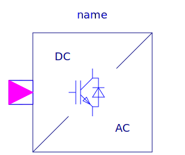

.
Modelica
.
Electrical
.
PowerConverters
.
DCAC
Information
General information about DC/AC converters can be found at the
DC/AC converter concept
Contents
Name
Description
Control
Control components for DC to AC converters
SinglePhase2Level
Single phase DC to AC converter

MultiPhase2Level
Multi phase DC to AC converter
Generated at 2018-09-28T09:15:45Z by
OpenModelica
OpenModelica 1.13.0~dev-1432-g3445e57